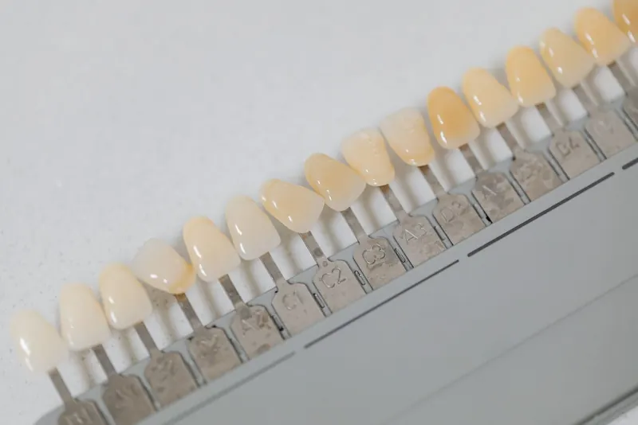
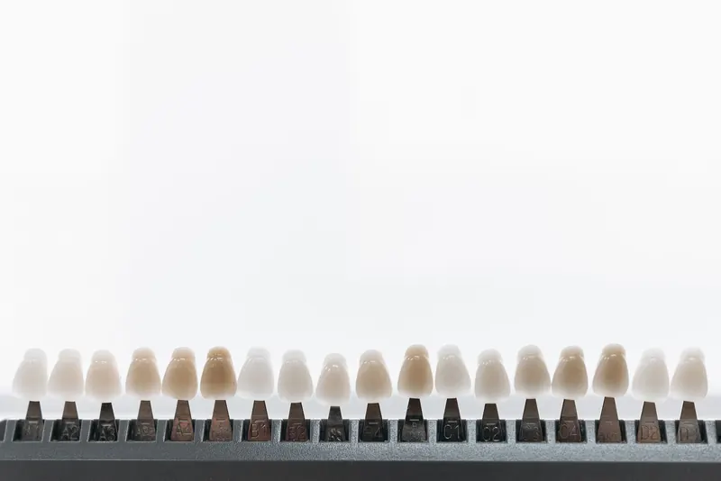

Same day crowns
CEREC pairs a 3D oral scanner with design and fabrication in the office.
Meet your dentist
Dr. Desai graduated from the University of California, San Francisco School of Dentistry in 1998. He has created and maintained healthy smiles for patients of all ages in the Tri-Valley since 2003.
He enjoys every part of dentistry. That includes smile makeovers, tooth colored fillings and crowns, replacing missing teeth, whitening, and periodontal care. He is an Invisalign certified provider.
Your health and comfort are his top priority. He makes sure you understand your condition and every option, in a relaxed setting.
Dr. Desai and his team give each patient individual attention. Care is planned around your needs and your goals. The aim is a calm, comfortable visit, every time.
The office
Technology that makes visits faster, more precise, and more comfortable.
CEREC pairs a 3D oral scanner with design and fabrication in the office.

See exactly what the doctor sees. No traditional impression trays.

2D, bitewing, panoramic, and 3D CBCT imaging. Faster, with less radiation exposure.

Charts and records that are virtually paperless.

The office follows strict infection control and sterilization protocols to keep patients and staff healthy.
No insurance? The team is happy to talk through ways it might help. Insurance and payment
[to confirm: team names, roles, and photos]
Call to book your first visit, or send a request online.